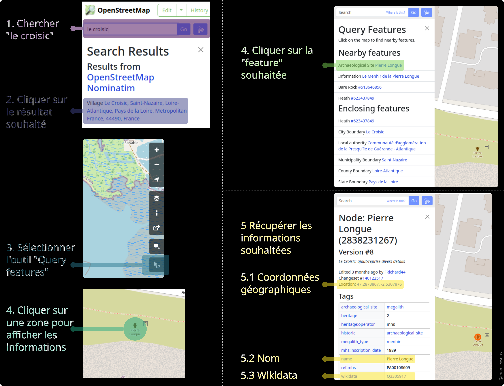

Développer une application web dynamique cartographique avec les librairies Python Panel et Bokeh (ou comment construire un jeu interactif ?)#
AVERTISSEMENT: il existe de nombreuses façons d’améliorer le code de notre application. Néanmoins, nous avons souhaité essayer de le rendre le plus simple et le plus accessible possible tout en restant “pythonique”.
Sujet |
Auteur |
Dernière Màj |
|---|---|---|
Application webmapping |
Thomas LEYSENS (IR AME) |
07 décembre 2023 |
Enjeux & Propositions#
Enjeu |
Proposition |
|---|---|
Global |
Développer une application de webmapping |
Classe et fonctions Python |
Explications et exemples |
Structurer une application |
Widgets, figures et callbacks |
Utiliser des paramètres externes |
Charger et lire un fichier YAML |
Utiliser des données externes |
Charger et lire un fichier CSV avec Pandas et Geopandas |
Contraintes d’une application en ligne |
Différences entre local et en ligne |
Préparation#
Données#
Dans notre cas, nous souhaitons construire un fichier de questions/réponses au format CSV (comma-separated values) afin qu’il soit chargé dans notre application:
c’est un jeu cartographique, nous allons donc récupérer des données sur OpenStreetMap
nous souhaitons agrémenter les réponses d’un lien Wikipédia (quand il est disponible), un prétraitement est donc nécessaire (afin de ne pas relancer les mêmes requêtes web lors de chaque lancement de notre application).
OpenStreetMap#
AVERTISSEMENT: Veillez à bien respecter les conditions d’utilisation des données open source d’OpenStreetMap, cf. License Open Data Commons Open Database License (ODbL)
Allons chercher quelques lieux symboliques de Le Croisic sur OpenStreetMap, voici comment faire pour l’exemple en question (Pierre Longue):

CSV#
Petit à petit, nous pouvons construire notre fichier CSV de questions/réponses avec tous les détails souhaités, dont voici un extrait ci-dessous:
question |
answer |
hint |
x |
y |
wikidata |
|---|---|---|---|---|---|
My eye, when opened, can save the ships. Who am I ? |
Phare du Tréhic |
Search in the North |
-2.5237 |
47.3082 |
Q20971192 |
If you break your leg, where do you go ? |
Ancien hôpital du Croisic |
Search for the red circle with a cross |
-2.51493 |
47.2918 |
Q21418896 |
I’ve got wheat and I want flour, where do I have to go ? |
Moulin de Beauvran |
Search near south of Laboratoire de biologie marine |
-2.51796 |
47.2855 |
Q21152416 |
I’m BotMan, where do I park my Botmobile ? |
Manoir de Kervaudu |
It is a manor surrounded by green areas |
-2.5264 |
47.2964 |
Q3286209 |
On peut constater qu’il nous manque les URL des pages Wikipedia (elles sont parfois présentes dans les données OSM mais nous préférons utiliser le Wikidata car il est plus souvent renseigné). Il est possible de les retrouver via l’identifiant Wikidata. Plutôt que de faire des recherches manuelles, nous allons créer une méthode Python pour récupérer automatiquement l’information et compléter le fichier CSV (le fichier Python se trouve ici et nous allons le détailler et l’expliquer).
Tout d’abord, voici le code brut:
"""
@author: thomleysens
"""
import requests
import pandas as pd
def get_wiki_url(
wikidata_id,
base_url="https://www.wikidata.org/wiki/Special:EntityData/{}.json",
wiki="frwiki"
):
"""
Get wikipedia url from wikidata ID
Parameters
----------
wikidata_id (str): Wikidata ID
base_url (str): Url to request Entity and get JSON response
Default: "https://www.wikidata.org/wiki/Special:EntityData/{}.json
wiki (str): Wiki reference
Default: "frwiki"
Returns
-------
url (str):
- Wikipedia URL if wikidata_id is not NA
- None if wikidata_id is NA
"""
if pd.isna(wikidata_id) is False:
url = requests.get(
base_url.format(wikidata_id)
).json()["entities"][wikidata_id]["sitelinks"][wiki]["url"]
else:
url = None
return url
Détaillons et explicitons le:
Tout d’abord, un commentaire indiquant l’auteur du code (cette partie du code ne sera pas exécutée étant considérée comme un commentaire):
"""
@author: thomleysens
"""
Il est nécessaire, ensuite, d’importer les librairies/modules Python qui seront utilisés dans notre code (requests et pandas):
import requests
import pandas as pd
Vient ensuite la fonction/méthode Python qui nous intéresse. Il convient de respecter certaines conventions pour la nommer. Le nom de la fonction vient après le mot clef
defqui définit une fonction. Nous indiquons entre parenthèses les arguments qui peuvent être des positional arguments ou des keywords arguments.
def get_wiki_url(
wikidata_id,
base_url="https://www.wikidata.org/wiki/Special:EntityData/{}.json",
wiki="frwiki"
):
Il convient de bien renseigner la fonction (afin qu’elle puisse êre comprise/modifiée/corrigée par d’autres). Pour ce faire, nous utilisons des docstrings:
"""
Get wikipedia url from wikidata ID
Parameters
----------
wikidata_id (str): Wikidata ID
base_url (str): Url to request Entity and get JSON response
Default: "https://www.wikidata.org/wiki/Special:EntityData/{}.json
wiki (str): Wiki reference
Default: "frwiki"
Returns
-------
url (str):
- Wikipedia URL if wikidata_id is not NA
- None if wikidata_id is NA
"""
Enfin vient le code qui sera exécuté. Tout d’abord, on vérifie que
wikidata_idn’est pasNaN(valeur nulle) avant de continuer. Cela est nécessaire car certaines lignes de notre CSV contiennent des valeurs nulles dans la colonnewikidata.
if pd.isna(wikidata_id) is False:
Si
wikidata_idn’est pasNaN:nous formatons
base_urlavec la variablewikidata_url:base_url.format(wikidata_id)
nous utilisons la fonction
get()de la librairierequestspour lancer une requête web avec l’url formatée et nous récupérons une valeur précise dans le JSON renvoyée par notre requête (si nous étions meilleurs élèves, il faudrait vérifier que la requête s’est bien déroulée): la valeur"url". Imaginons quewikidata_idait la valeurQ20971192et quewikiait la valeur par défaut, la valeur de l’élément"url"se trouverait au bout du “chemin”["entities"]["Q20971192"]["sitelinks"]["frwiki"]["url"]:url = requests.get( base_url.format(wikidata_id) ).json()["entities"][wikidata_id]["sitelinks"][wiki]["url"]
Si
wikidata_idestNaN, la fonction attribue la valeurNoneà la variableurl:
else:
url = None
La fonction renvoie enfin la variable
url:
return url
Nous pouvons donc (cf code ci-dessous):
lire et charger le fichier CSV
game_QA.csvimporter la fonction précédente afin de l’appliquer à la colonne
urlenregistrer le fichier CSV modifié
import pandas as pd
from utils import get_wiki_url
csv_file = "game_QA.csv"
df = pd.read_csv(
csv_file,
sep=";",
encoding="utf-8"
)
df["url"] = df["wikidata"].map(
get_wiki_url
)
df.to_csv(
csv_file,
sep=";",
encoding="utf-8",
index=False
)
Application Panel#
Le Jupyter Notebook contenant l’application se trouve ici
Enjeux#
Nous avons souhaité développé une application - que nous espérons ludique - afin d’illustrer quelques possibilités pour une application interactive et dynamique avec un certain degré de complexité. Les enjeux sont les suivants:
Exposer les possibilités d’intégrer une carte interactive
Intégrer un exemple de chat
Créer quelques widgets et des callbacks liés
Montrer des exemples d’interactions
Charger des fichiers (paramètres et données)
Exposer quelques possibilités de données/outils à disposition pour la cartographie
Explications du jeu#
Nous vous conseillons de faire une partie de notre jeu avant de lire la suite afin de mieux comprendre ce que nous allons exposer
Le jeu fonctionne ainsi:
une fois le bouton
STARTenclenché, une nouvelle partie commence et le chat affiche une nouvelle questionvous répondez à ce jeu cartographique en ajoutant un point sur la carte puis en cliquant sur le bouton
VALIDATEle programme vérifie la réponse et renvoie un temps passé pour cette question ou un indice si la réponse n’est pas valide
une fois un nombre maximal de questions atteint, le programme renvoie le temps passé par question (sous la forme d’un histogramme) et le temps total
une partie peut être relancée en appuyant sur le bouton
RESETpuisSTART
Explications techniques#

Tout d’abord, comme pour le module Python contenant notre fonction précédente, nous importons les librairies Python que nous utiliserons dans notre classe et fonctions Python:
import geopandas as gpd
import panel as pn
import numpy as np
import time
import xyzservices.providers as xyz
import yaml
import requests
from collections import namedtuple
from random import sample
from bokeh.palettes import Greens5 as palette
from bokeh.models import (
ColumnDataSource,
PointDrawTool,
Button,
HoverTool,
Range1d
)
from bokeh.plotting import figure
from shapely.geometry import Point
Il est nécessaire, pour que l’application fonctionne correctement depuis le notebook, d’indiquer à Panel de charger la ou les extensions(s) nécessaire(s). Les paramètres entre parenthèses peuvent, bien entendu, varier en fonction des besoins:
pn.extension(notifications=True)
Nous indiquons également, au préalable, les paramètres généraux du chat que nous allons mettre en place (nous définissons un avatar par défaut pour l’utilisateur Bot et nous désactivons les icônes de réaction)
pn.chat.ChatMessage.default_avatars["Bot"] = "🤖"
pn.chat.ChatMessage.show_reaction_icons = False
L’application repose sur quelques paramètres que nous avons choisi de charger depuis un fichier de paramètres YAML (dont voici un exemple ci-dessous) afin de ne pas surcharger notre application.
Le fichier YAML se présente ainsi:
ranges:
x: [-284221, -277648]
y: [5987515, 5992714]
buffer_value: 200
csv:
file: "game_QA.csv"
sep: ";"
nb_questions: 5
Détaillons ces paramètres:
ranges: nous indiquons des intervalles pour l’axe des x et des y pour la figure comprenant la carte (les valeurs sont exprimées en EPSG 3857). Ces valeurs ont été obtenues via l’outil Tile calculator de Geofabrik.buffer_value: Valeur (en mètres) utilisée pour créer un buffer (ou zone tampon) lors de la vérification d’un point tracé par l’utilisateur.csv: Indication du chemin du fichier CSV viafileet du séparateur avecsep.nb_questions: Nombre maximal de questions par session de jeu
Ceux-ci doivent être lus et compris par notre code, il faut donc que Python puisse lire notre fichier de paramètres, c’est l’objet des lignes suivantes dans notre module:
Avertissement: il existe une légère différence entre la version locale et la version en ligne de notre application - pour des raisons de sécurité - puisqu’il n’est pas possible de charger un fichier “local” depuis une application. Pour la version en ligne, nous chargeons donc un fichier de paramètres hébergé en ligne sur notre dépôt GitHub qui comporte un lien vers un fichier CSV également hébergé sur notre dépôt.
version locale:
filepath = "./game_params.yml"
version en ligne:
filepath = "https://raw.githubusercontent.com/thomleysens/Tutoriels_AME/main/tutoriels/game_params_remote.yml"
La fonction load_params permet de gérer 2 cas pour charger un fichier de paramètres: depuis un fichier local ou depuis une URL.
def load_params(filepath):
"""
Load parameters from local or remote
YAML file
Parameters
----------
filepath (str): URL or path to local file
File (local or remote) needs
to be structured like this:
ranges:
x: [-284221, -277648]
y: [5987515, 5992714]
buffer_value: 200
csv:
file: "game_QA.csv"
sep: ";"
nb_questions: 5
Return
------
params (namedtuple)
"""
Params = namedtuple(
"Params",
[
"ranges",
"buffer_value",
"nb_q",
"csv_sep",
"csv_file"
]
)
#Cheap way to check if url
#(better methods exist but we keep it simple)
if filepath.lower().startswith(
("http://", "https://")
):
content = yaml.safe_load(
requests.get(filepath).content
)
else:
with open(filepath, "r") as file:
content = yaml.load(
file,
Loader=yaml.FullLoader,
)
params = Params(
content["ranges"],
content["buffer_value"],
content["nb_questions"],
content["csv"]["sep"],
content["csv"]["file"]
)
return params
Cette fonction permet de vérifier (d’une manière un peu pauvre mais nous souhaitons garder une certaine simplicité) si le chemin du fichier est une URL ou, à défaut, un chemin vers un fichier local:
si c’est une URL le code lance une requête web et lit le résultat de la requête pour charger le YAML
si c’est un chemin vers un fichier local, il charge le fichier.
La fonction renvoie un namedtuple params qui est un objet Python (similaire à une classe) comprenant les éléments suivants présents dans le YAML:
ranges=> ranges x et ybuffer_value=> valeur du buffer en mètresnb_q=> nombre maximum de questions par sessioncsv_sep=> délimiteur CSVcsv_file=> chemin/URL vers le fichier CSV
Elle permet de rendre le code plus propre et lisible sans le complexifier à outrance.
Nous arrivons enfin à notre classe Python Game contenant la création de widgets, figures et fonctions.
Tout d’abord, nous initialisons les différents widgets, figures, variables dans la fonction __init__. Vous noterez qu’elle fait partie de notre classe Game ainsi que self dans les arguments: cela indique que cette fonction appartient à la classe Game et qu’elle peut être appelée par d’autres fonctions dans la même classe, par exemple. Il en va de même pour les variables commençant par self.
def __init__(self):
"""
Init figures and widgets:
- map
- chat feed
- histogram
- main board
& load DataFrame from CSV file
& transform it to GeoDataFrame
"""
self.rules = pn.pane.Alert(
"<p>Click on the START button \
to start a game.</p><p>Place a point on the map \
(<i>with Point Draw Tool</i> \
<img src='https://docs.bokeh.org/en/latest/_images/PointDraw.png' \
alt='Point draw tool' style='width:20px;height:20px'>) \
to answer a question (<i>out of a total of {}</i>)</p><p>Then click \
on the VALIDATE button.</p><p>You can also pan \
<img src='https://docs.bokeh.org/en/latest/_images/Pan.png' \
alt='Pan tool' style='width:20px;height:20px'> \
and wheel zoom \
<img src='https://docs.bokeh.org/en/latest/_images/WheelZoom.png' \
alt='Wheel zoom tool' style='width:20px;height:20px'></p>".format(PARAMS.nb_q),
alert_type="primary"
)
self.issues = pn.pane.Alert(
"If you find bugs or want to propose new features, \
feel free to create a \
<a href='https://github.com/thomleysens/Tutoriels_AME/issues' \
target='_blank'>new issue on GitHub</a>",
alert_type="warning"
)
self.progress_value = int(100/PARAMS.nb_q)
self.chat_feed = pn.chat.ChatFeed()
self.map = figure(
name="map",
sizing_mode="stretch_both"
)
self.map.add_tile(xyz.OpenStreetMap.Mapnik)
self.map.axis.visible = False
self.map.grid.visible = False
self.map.x_range = Range1d(
PARAMS.ranges["x"][0],
PARAMS.ranges["x"][1]
)
self.map.y_range = Range1d(
PARAMS.ranges["y"][0],
PARAMS.ranges["y"][1]
)
df = gpd.pd.read_csv(
PARAMS.csv_file,
sep=PARAMS.csv_sep,
encoding="utf-8"
)
df["geometry"] = df.apply(
lambda x: Point(x.x, x.y),
axis=1
)
self.gdf_base = gpd.GeoDataFrame(df).set_crs(
epsg=4326
).to_crs(
epsg=3857
)
self.gdf = self.gdf_base.copy()
self._set()
self._get_random()
self.progress = pn.indicators.Dial(
name="Completion",
value=0,
bounds=(0, 100),
format="{value} %",
colors=[
(0.25, palette[1]),
(0.50, palette[2]),
(0.75, palette[3]),
(1.0, palette[4])
],
title_size="18px",
value_size="20px"
)
self.points = self.map.scatter(
x="x",
y="y",
source=self.source,
size=10,
color="red"
)
self.points.on_change(
"data_source",
self._get_point
)
draw_tool = PointDrawTool(
renderers=[self.points],
empty_value="black"
)
self.map.add_tools(draw_tool)
self.map.toolbar.active_tap = draw_tool
self.run_button = Button(
label="START",
button_type="success"
)
self.reset_button = Button(
label="RESET",
button_type="warning"
)
self.check_button = Button(
label="VALIDATE",
button_type="success"
)
self.run_button.on_click(
self._get_question
)
self.check_button.on_click(
self._check
)
self.reset_button.on_click(
self._reset
)
self.loading = pn.indicators.LoadingSpinner(
value=True,
size=60,
name="spinner",
visible=False
)
tooltips = [
("question", "@question"),
("time", "@time")
]
self.hist = figure(
x_axis_label="Question",
y_axis_label="Time in seconds",
title="Time by question",
toolbar_location=None,
tools="",
x_range=[
str(x+1) for x in range(PARAMS.nb_q)
],
sizing_mode="stretch_both",
tooltips=tooltips
)
self.hist.vbar(
x="question",
top="time",
width=0.5,
bottom=0.0,
source=self.hist_source
)
self.main_board = pn.Row(
self.map,
self.chat_feed,
sizing_mode="stretch_both"
)
Dans la suite de ce tutoriel, nous ne détaillerons pas chaque fonction, puisque nous avons déjà exposé en détail le fonctionnement de fonctions précédentes. Il ne nous semble donc pas nécessaire d’illustrer encore plus ce que peut être une fonction Python
Cette fonction comprend:
la création d’espaces de textes (sous la forme d’alertes Panel) afin d’indiquer les règles du jeu ainsi que la possibilité de créer des issues sur GitHub:
self.rulesself.issues
la création de widgets:
des boutons:
self.run_button: boutonSTARTauquel est liée - déclenchée par un clic gauche - la fonctionGame._get_question(la fonction contient un “_” - underscore - car nous la considérons “privée”, elle n’est pas destinée à être utilisée en dehors du fonctionnement interne de la classe):choix d’une question dans une sélection au hasard de l’ensemble des questions disponibles
si le nombre maximal de question a été atteint, le programme renvoie le temps total et un histogramme du temps passé par question dans le chat
s’il reste des questions, une nouvelle question est envoyée dans le chat
self.check_button: boutonVALIDATEauquel est liée - déclenchée par un clic gauche - la fonctionGame._check:prend en considération le dernier point ajouté sur la carte par l’utilisateur (via l’outil PointDrawTool) et crée un buffer (zone tampon) autour du point de n mètres et vérifie si le point correspondant à la réponse y est contenu
si oui, le programme renvoie un message de validation dans le chat
si non, il envoie un indice
self.reset_button: boutonRESETauquel est liée - déclenchée par un clic gauche - la fonctionGame._reset:réinitialise le chat et l’indicateur de complétion
lance la fonction
Game._setavec le paramètreresetavec la valeurTruepour réinitialiser certains éléments
un widget indiquant la complétion:
Game.progressqui est unDial(panel.indicatiors.Dial)
la création et l’initialisation de l’élément
maindu template avec une instance de panel.Row comprenant:une figure comprenant une carte basée sur les données open source OpenStreetMap stylisées et fournies par l’outil open source MapNik. Nous limitons les
rangesxetypour caler la carte sur la région que nous avons choisie (ces paramètres sont indiqués dans notre fichier YAML de paramètres). Nous y ajoutons un outil aux outils par défaut: bokeh.models.PointDrawTool pour permettre à l’utilisateur de tracer un point sur la carte.un chat (panel.chat.ChatFeed) qui nous sert à afficher des questions, réponses, indices et un histogramme (à la fin d’une partie) qui est une bokeh.plotting.figure comprenant un vertical bar chart.
l’initialisation de variables et figures:
un Scatter plot accueillant les points tracés par l’utilisateur et s’ajoutant à la carte. Un changement dans les points (ajout) enclenche la fonction
Game._get_pointqui ajoute les points dans un élément bokeh.models.ColumDataSource.un pandas.DataFrame créé à partir du fichier CSV contenant les questions, les réponses, les indices, les wikidata, les URL Wikipedia et les coordonnées géographiques. Ce
DataFrameest transformé en geopandas.GeoDataFrame qui est unDataFrameavec une dimension géographique puisqu’il contient des shapely.geometry.Point
le lancement de certaines fonctions:
Game._setdéjà évoquéeGame._get_random: sélectionne au hasard un nombre n maximal de questions pour la session de jeu en cours
Vous pouvez, si vous le souhaitez, aller voir en détail les fonctions et leurs docstrings dans le Jupyter Notebook
Penchons nous sur la fin du notebook:
# Init Game
game = Game()
# Template
bootstrap = pn.template.BootstrapTemplate(
title="Doctoriales GAME"
)
bootstrap.sidebar_width = 270
bootstrap.sidebar.append(
pn.Row(
game.run_button,
game.check_button,
game.reset_button
)
)
bootstrap.sidebar.append(game.rules)
bootstrap.sidebar.append(game.progress)
bootstrap.sidebar.append(game.issues)
bootstrap.main.append(game.main_board)
bootstrap.servable();
Expliquons en détail:
La première ligne initialise la classe (avec la fonction
Game.__init__):
game = Game()
Ensuite nous créons un
templatevia panel.template.BootstrapTemplate:
bootstrap = pn.template.BootstrapTemplate(
title="Doctoriales GAME"
)
Nous paramétrons la largeur en pixels de la
sidebar:
bootstrap.sidebar_width = 270
A cette
sidebarnous ajoutons des éléments (ceux définis parGame.__init__):une ligne de boutons:
bootstrap.sidebar.append( pn.Row( game.run_button, game.check_button, game.reset_button ) )
les règles:
bootstrap.sidebar.append(game.rules)
le widget de progression:
bootstrap.sidebar.append(game.progress)
le texte concernant les issues:
bootstrap.sidebar.append(game.issues)
Enfin, nous intégrons au
maindutemplatela carte et le chat intégrés dans un élémentRow:bootstrap.main.append(game.main_board)
Pour terminer nous rendons l’application
servable(cf documentation pour plus de détails):bootstrap.servable();
Pour aller plus loin#
Instance locale avec panel serve#
Si vous souhaitez lancer l’application en local:
ouvrez une invite de commande dans le sous-dossier
tutoriels:conda activate tutoriels_AME panel serve game_panel.ipynb
lancez une instance de votre navigateur et entrez l’adresse suivante: http://localhost:5006/game_panel
Instance locale après conversion#
transformez l’application Panel en ouvrant une invite de commande dans le sous-dossier
tutoriels:panel convert game_panel.ipynb --to pyodide-worker --out pyodide
lancez un serveur local
python3 -m http.server
lancez une instance de votre navigateur et entrez l’adresse suivante: http://localhost:8000/pyodide/game_panel.html
Liens utiles#
Licenses librairies Python / Données / API#
Données & API#
API / Données |
License / Droit d’usage |
Documentation |
|---|---|---|
Librairies Python#
Voir le README